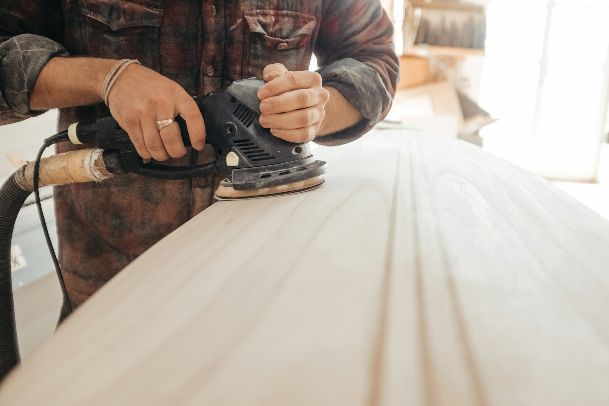
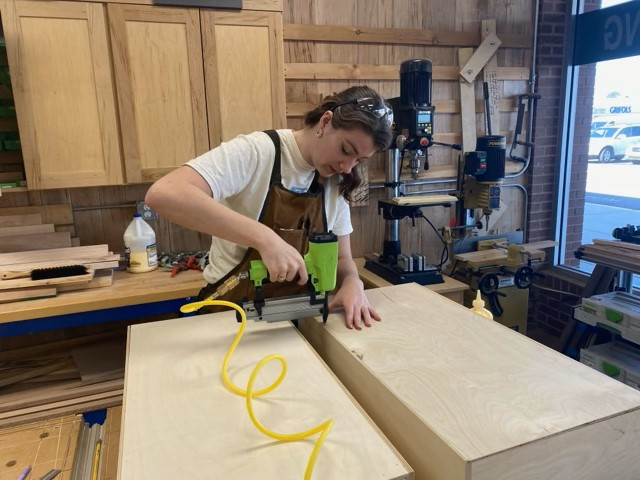

My backstory
I grew up home schooled and come from an extensive line of teachers, preachers, and carpenters. Like over 5 generations, with a few other careers scattered in. It is a little crazy and strangely biblical sounding. The funny thing is my older sister is a teacher, my older brother is in school to be a preacher, and I somehow ended up in woodworking. I have always loved being creative and working with my hands whenever I got the chance. School was hard for me, and I never liked staying inside for long. So, when the opportunity to pursue a career filled with creativity came up, I knew it could be something big. And I still have big dreams for it today.

Why I started Woodworking
I find it funny how I got into woodworking. I was frustrated with the new particle board furniture people were selling when I was looking to buy a desk for my room. This led to a discussion with my mother about how furniture now a days are no longer made to stand the test of time like vintage pieces were made. My mother casually reminded me I have over 5 generations of woodworkers in my family and if I was so frustrated I should do something about it and make one myself. This got me thinking, if I could learn to do woodworking, I could solve my need for a sturdy desk that would last longer than the third time I moved it. So, I started looking for opportunities, to learn and that is how I found woodcraft.

My goals for Woodworking
- Own my own company
- Learn to hand carve
- Build my own shop
- Learn more about finishing products overall